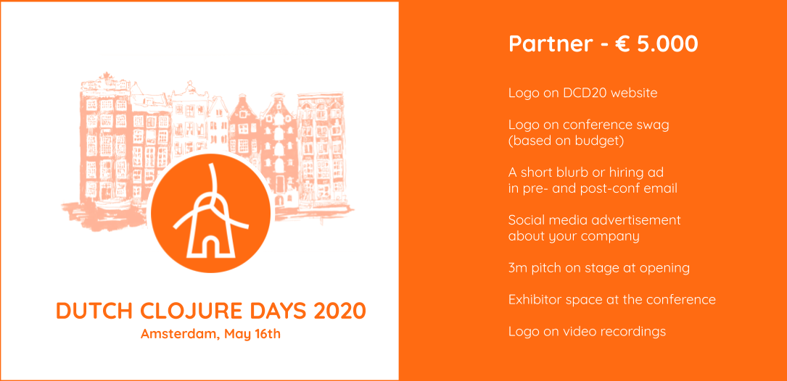
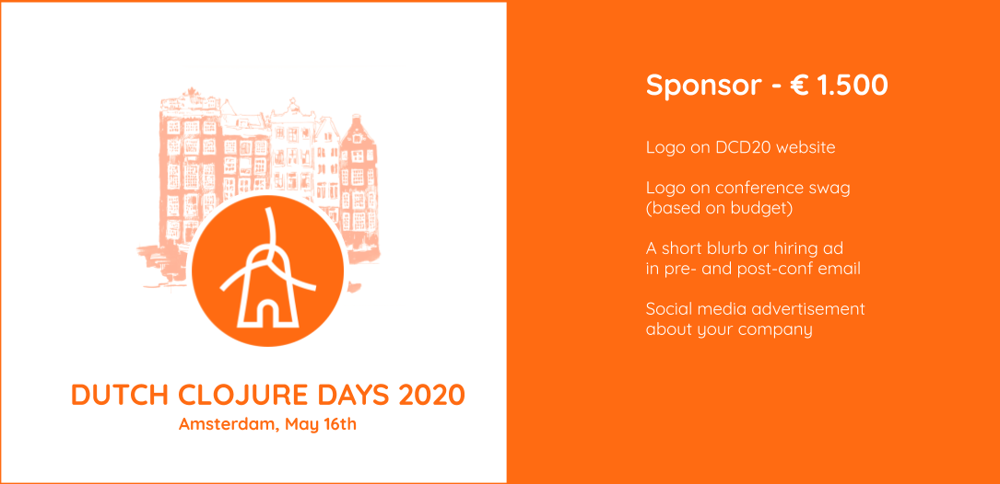

About DCD 2020
The Annual International Gathering of Clojure Enthusiasts and Practitioners in the Netherlands! We welcome you to the 5th edition of our free and non-profit Clojure conference organised by the community, for the community with a full day of amazing talks in a friendly welcoming atmosphere.
When?
Dutch Clojure Days will happen on Saturday, May 16th, 2020.
Where?
Dutch Clojure Days will take place at the wonderful TQ, in the heart of Amsterdam (Singel 542, 1017 AZ Amsterdam).
Tickets
The conference is currently sold out, but fear not! As a free event, it often happens that tickets become available later during to cancellations. Stay tuned for updates!
Call for Proposals
Our CFP is open until March 15, 2020.
You can submit your proposal at Papercall.
We look forward to receive your groudbreaking, breathtaking, parenssurfing proposals on topics such as (but not limited to) real-world experiences and lessons learned from putting your clojure(script) applications to production, fancy new library tool that just landed on the clojure planet, etc. Be creative!
Sponsors


Sponsorship Packages
If you want to support us and Clojure community, consider sponsoring us. We offer two affordable sponsorship packages, check them out:

If you want to support and engage with the Dutch Clojure Days community, please get in touch via email at events@clojuredays.org.
Code of Conduct
All attendees, speakers, sponsors and volunteers at our conference are required to agree with the following code of conduct. Organisers will enforce this code throughout the event. We expect cooperation from all participants to help ensure a safe environment for everybody.
Need Help?
You can always reach out to us at events@clojuredays.org or on twitter.
The Quick Version
Our conference is dedicated to providing a harassment-free conference experience for everyone, regardless of gender, gender identity and expression, age, sexual orientation, disability, physical appearance, body size, race, ethnicity, religion (or lack thereof), or technology choices. We do not tolerate harassment of conference participants in any form. Sexual language and imagery is not appropriate for any conference venue, including talks, workshops, parties, Twitter and other online media. Conference participants violating these rules may be sanctioned or expelled from the conference without a refund at the discretion of the conference organisers.
The Less Quick Version
Harassment includes offensive verbal comments related to gender, gender identity and expression, age, sexual orientation, disability, physical appearance, body size, race, ethnicity, religion, technology choices, sexual images in public spaces, deliberate intimidation, stalking, following, harassing photography or recording, sustained disruption of talks or other events, inappropriate physical contact, and unwelcome sexual attention.
Participants asked to stop any harassing behavior are expected to comply immediately.
Sponsors are also subject to the anti-harassment policy. In particular, sponsors should not use sexualised images, activities, or other material. Booth staff (including volunteers) should not use sexualised clothing/uniforms/costumes, or otherwise create a sexualised environment.
If a participant engages in harassing behavior, the conference organisers may take any action they deem appropriate, including warning the offender or expulsion from the conference with no refund.
If you are being harassed, notice that someone else is being harassed, or have any other concerns, please contact a member of conference staff immediately. Conference staff can be identified as they'll be wearing branded clothing and/or badges.
Conference staff will be happy to help participants contact hotel/venue security or local law enforcement, provide escorts, or otherwise assist those experiencing harassment to feel safe for the duration of the conference. We value your attendance.
We expect participants to follow these rules at conference and workshop venues and conference-related social events.